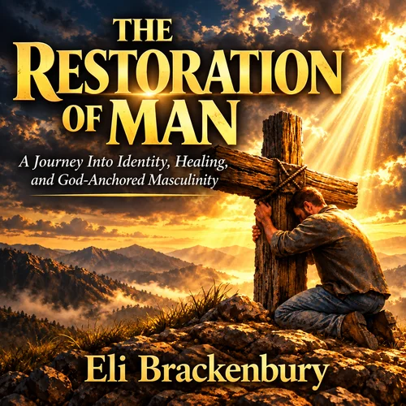

Meet Eli
At fifty, an unexpected encounter with God changed how Eli understood faith, purpose, and his own story.
Read Eli’s story →Eli Brackenbury
A journey into identity, healing, and God-anchored masculinity.
Through his book, speaking, and men’s coaching, Eli invites men to face what they’ve been carrying and rediscover who they are in Christ.

It can begin by being honest with God about the hurt you’ve carried for years. Eli’s work explores how that honesty changes the way men relate to God, their families, and the people who count on them.
At fifty, an unexpected encounter with God changed how Eli understood faith, purpose, and his own story.
Read Eli’s story →Listen to Eli talk about starting over in midlife, facing unresolved hurt, and finding identity in Christ.
Explore speaking and interviews →If those questions hit close to home, reach out about faith-centered coaching.
Learn about coaching →